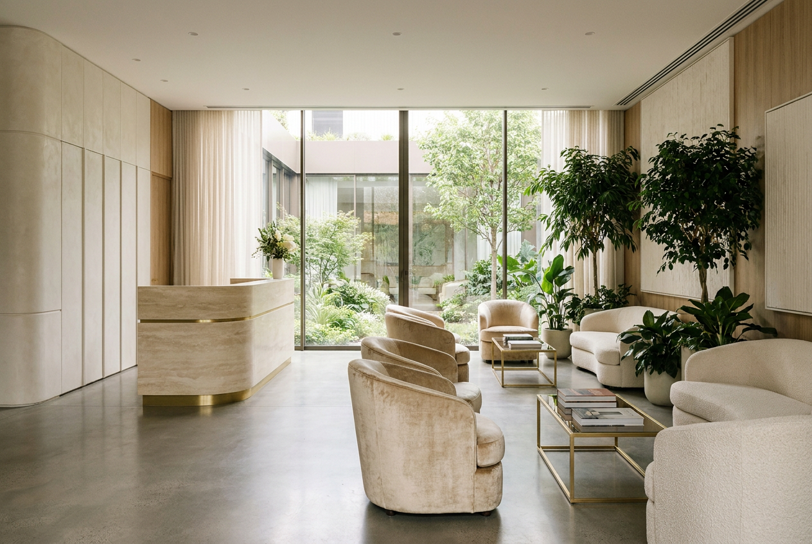

Private · Main Practice
One Hatfield Hospital
3 Hatfield Avenue, Hatfield, AL10 9UA
A modern private hospital and the home of Mr Vijayan's main practice, Leonie Grace Ltd, with on-site theatres, imaging and overnight care.